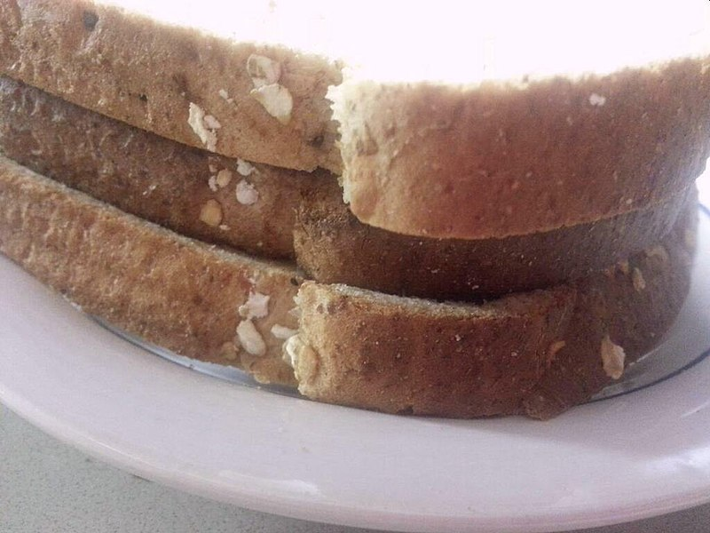

Queso

Description
This item is a relic of the dark days of British culinary history. Called "the most insipid sandwich in existence," the toast sandwich is a slice of toast compressed between two pieces of bread.
Place a very thin piece of cold toast between two slices of thin bread-and-butter in the form of a sandwich, adding a seasoning of pepper and salt. This sandwich may be varied by adding a little pulled meat, or very fine slices of cold meat, to the toast.
Ingredients
- Bread
- Butter
- Pepper
- Depression
- Salt (Tears be used in place of salt)
- (Optional) A meager scrap of meat
Steps
- Get three slices of bread.
- Butter one slice. Season with salt and pepper to taste.
- Get remaining two slices.
- Place one unbuttered slice on the top of the buttered slice.
- Place the remaining unbuttered slice on the bottom of the buttered slice.
- That's it.
- What about the meat? We know the answer- If you had meat, would you really be eating three slices of bread?